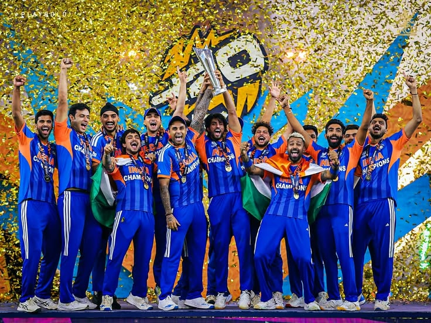
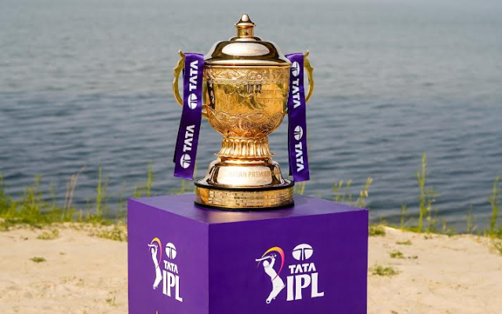
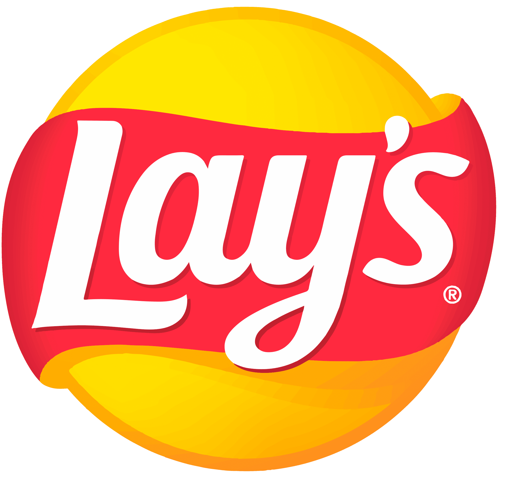
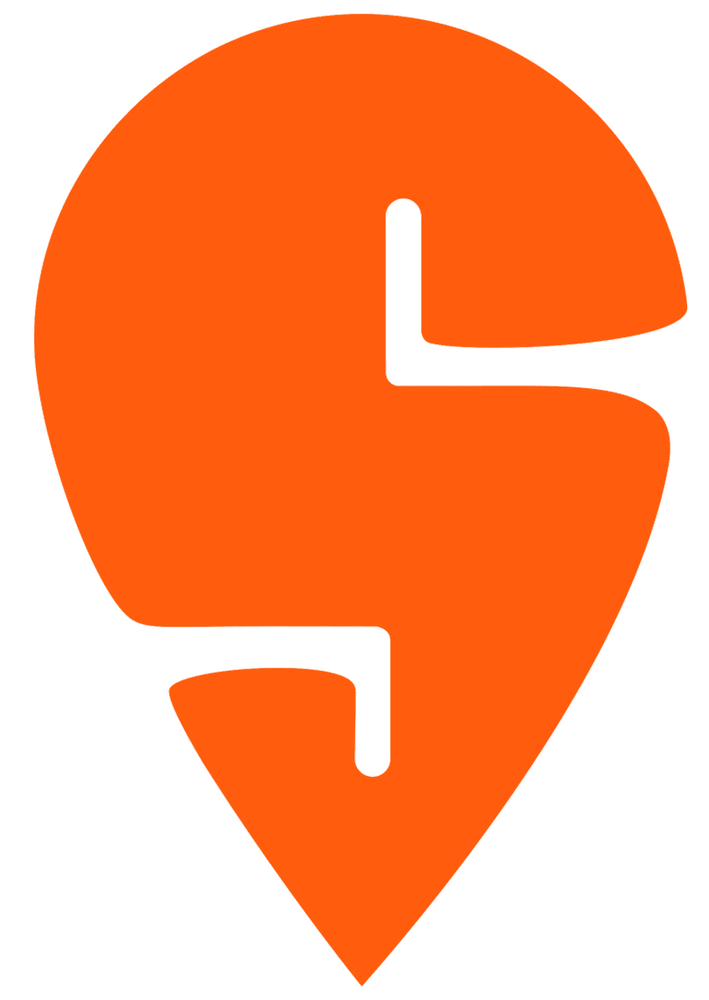
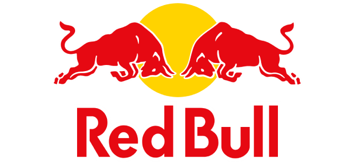
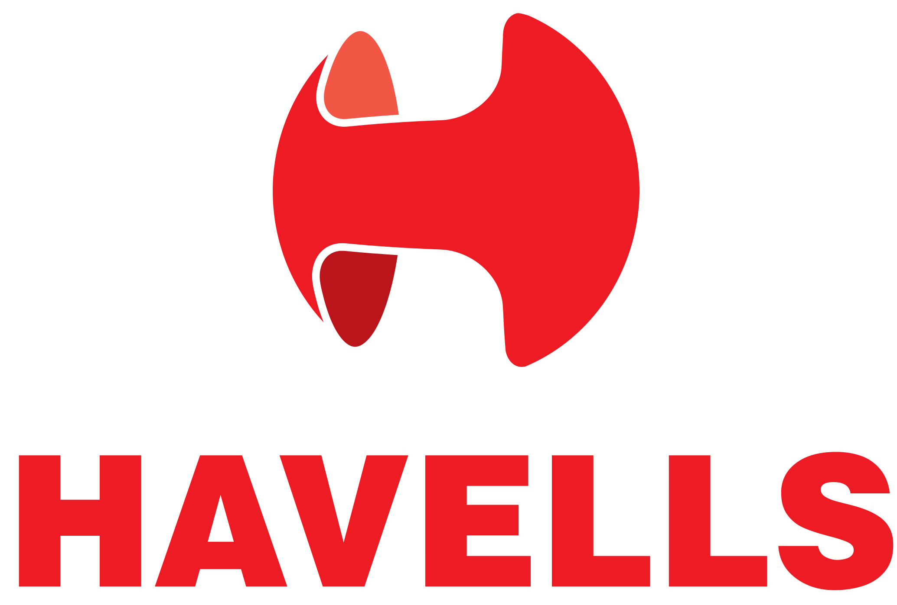
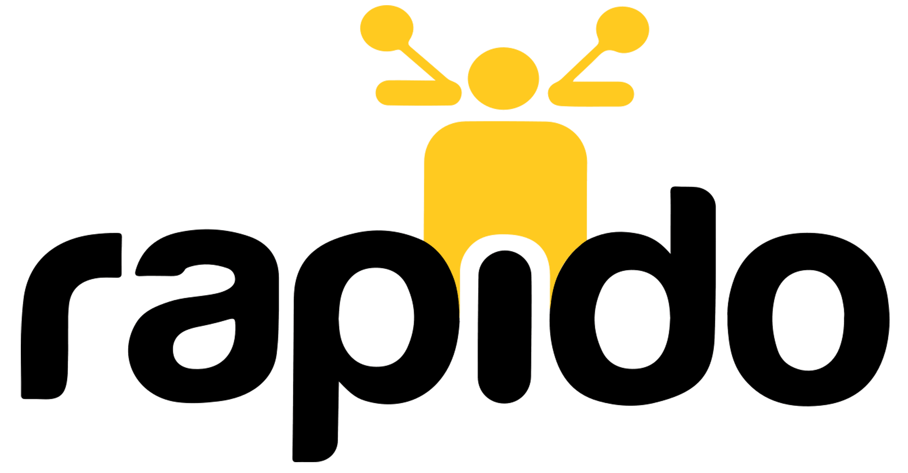
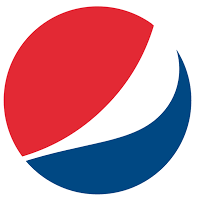
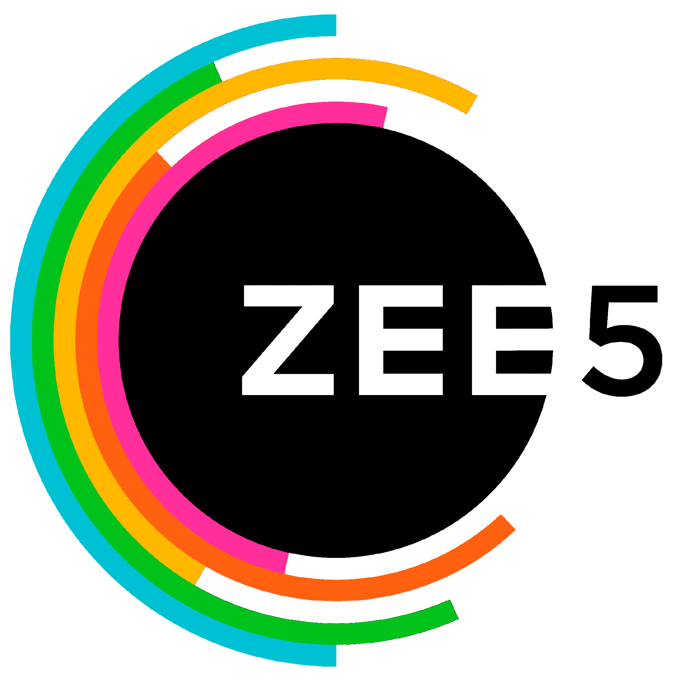
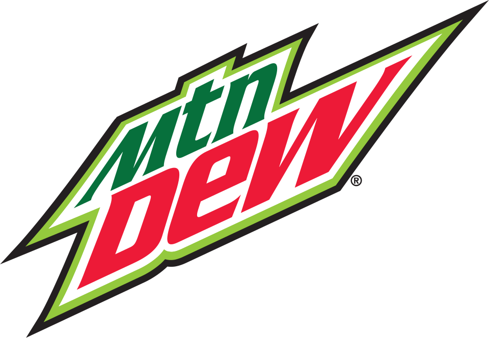

0 Campaigns Managed
Managed end-to-end across live sports inventory
JioHotstar is one of India’s largest digital streaming platforms, delivering live sports, entertainment, and premium video content to millions of viewers. During major events like the Indian Premier League and ICC tournaments, the platform handles massive concurrent viewership and high-scale ad delivery across multiple devices and languages.
As an Ad Operations Consultant, I worked on campaign setup, live execution, delivery monitoring, and reporting for video and display ad campaigns, ensuring smooth performance during high-traffic sporting events and large-scale streaming audiences.


Streaming & Digital Entertainment
OTT Platform
5 Months
Jan 2026 - May 2026
Brands / Clients Advertised














Operational Impact
Delivered precise campaign execution and quality control across high-volume IPL and World Cup advertising campaigns during peak live-streaming events.
0 Campaigns Managed
Managed end-to-end across live sports inventory
0 QC Accuracy Rate
Consistent quality checks on tags, trackers, and campaign setup
Multi-format
Video, display, and hybrid ad formats across campaign types
OTT + Video + Display
Cross-channel delivery aligned to platform and audience context
Fast Turnaround
Rapid execution windows during live match-day campaign cycles
High-volume Handling
Reliable ops throughput during IPL, ICC, and peak traffic events
Coordinated large brand portfolios with structured workflows, clear ownership, and disciplined go-live readiness.
Maintained rigorous pre-live QC on creatives, landing pages, trackers, and ad-server configuration.
Streamlined cross-team handoffs between sales ops, editors, and internal stakeholders for faster turnaround.
Campaign Brief
Ad Setup
Tag Validation
Quality Check
Go Live
Monitoring
Reporting
Worked on end-to-end ad campaign operations for multiple leading brands across sports and entertainment streaming platforms. This included coordinating with sales ops, editors, and internal teams to prepare creatives, landing pages, trackers, tags, and campaign instructions before setting up video and display campaigns on the ad server. I also handled campaign planning data, daily delivery updates, spot execution playbooks, and live campaign monitoring across different platforms and languages during high-traffic events.
Ensured smooth and timely execution of large-scale ad campaigns during major sporting events like the Indian Premier League and ICC World Cup tournaments, through accurate delivery tracking, efficient cross-team coordination, and reliable reporting workflows. By maintaining campaign performance data across formats and match-level deliveries, I helped streamline operations, improve execution accuracy, and support seamless ad delivery for millions of live viewers across multiple platforms and languages.